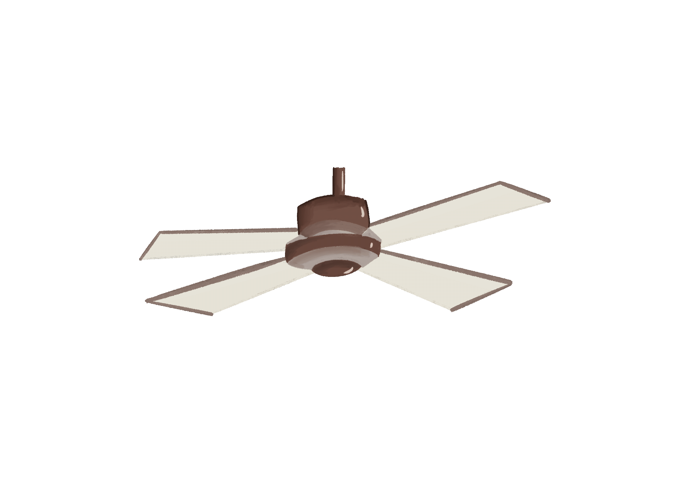
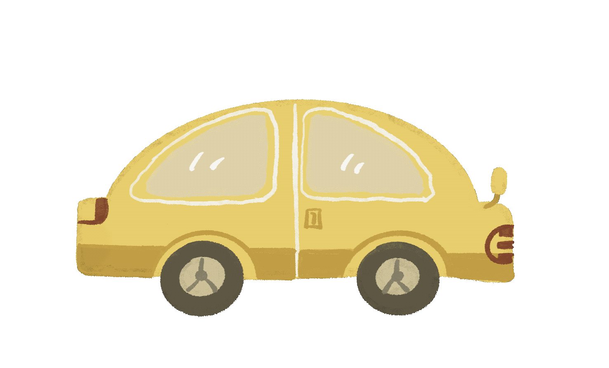
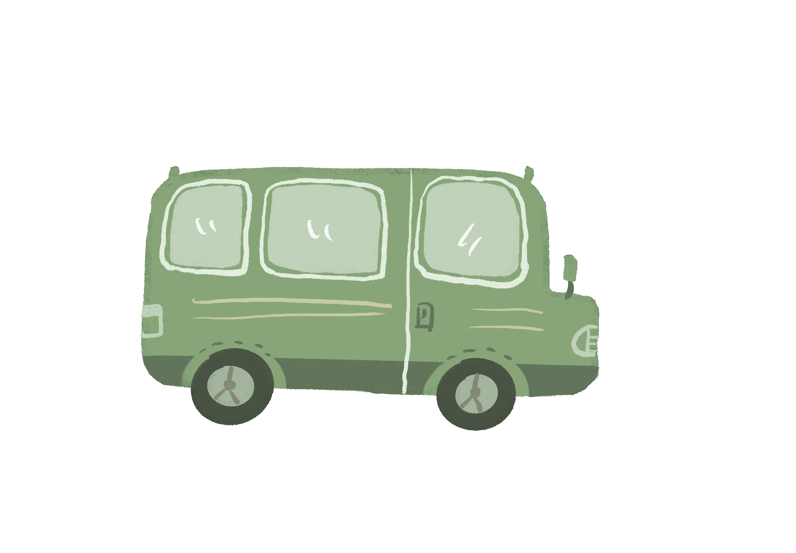
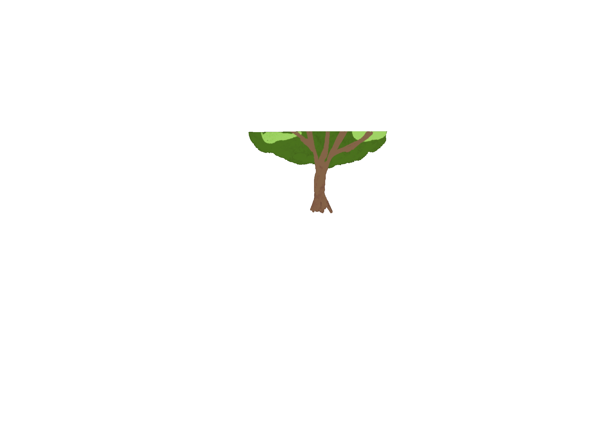
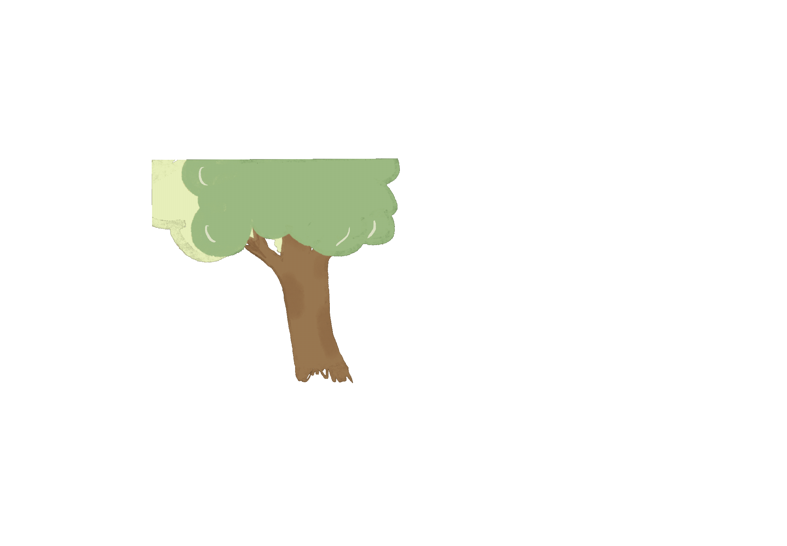

Paw
Paths
A gentle puzzle adventure about memory, curiosity, and companionship. Personal project, 2024.
Paw Paths Prototype in Play
Project Overview
Paw Paths is a gentle 2D puzzle adventure about a puppy collecting fragments of everyday memories.
Players explore familiar spaces from a dog's point of view, including home, the neighborhood street, and a dog park. Through simple interactions, light puzzles, and object collection, the player gradually uncovers moments of joy, curiosity, and companionship.
The project was inspired by my own dog and the shared experiences I observed within a community of dog owners. I wanted to create a warm and low pressure experience that celebrates small moments rather than challenge or competition.
Designing the Puppy
The main character was inspired by my black Shiba Inu.
I wanted the puppy to feel playful, curious, and expressive through simple movement and animation. The visual style uses soft shapes, childlike illustration, and a warm color palette to support the relaxed tone of the game.
The character was designed as the emotional center of the experience. Even simple actions such as walking, sniffing, searching, or playing needed to communicate personality.

Character Design

Walking Animation
Three Everyday Worlds
Each environment gives the puppy a different space to explore, a different set of interactions, and different memory fragments to discover.
Home
Home is the starting point of the puppy's journey. The space is designed around familiar domestic details and small interactions. Players can search for the puppy's frog toy, explore the living room, interact with furniture, and discover memory fragments connected to family life.

Home Environment


Interactive Prop and Scene Detail
Street
The street expands the puppy's world beyond home. Players explore a familiar neighborhood, chase birds, collect small objects, cross the road carefully, and discover memory fragments hidden within everyday street details. The scene combines light exploration with simple environmental timing and object interaction.

Street Environment


Street Interaction and Animated Props


Crossing Mechanic and Collectible Details
Dog Park
The dog park is the most open and social environment in the prototype. Players can meet other dogs, help find missing toys, collect objects, explore playful interactions, and discover memory fragments connected to companionship and outdoor play.

Dog Park Environment


Collectible Props and Character Interaction
Designing Gentle Interaction
The interaction system was designed to support curiosity rather than difficulty. Players discover memories by exploring environments, interacting with objects, and completing simple collection based tasks.
Memory Fragment Collection
Interacting with objects or completing small tasks unlocks visual memory fragments. Each environment has its own collection progress, and players need to gather the key fragments before moving forward.
Light Puzzle Tasks
Puzzles are simple and familiar, such as finding the puppy's favorite toys or helping another dog recover a missing object. The goal is to support narrative progression rather than create frustration.
Environmental Interaction
Players can tap objects to change their state, move across the scene, or help the puppy reach a new area.

Scene 1 Interaction Plan

Scene 2 Interaction Plan

Scene 3 Interaction Plan
Supporting Memory and Progress
The UI was designed to support exploration without overwhelming the player.
The core interface includes dialogue and interaction windows, puzzle prompts, scene progress tracking, a memory fragment collection bar, and a memory album for viewing collected fragments.
The memory album acts as the emotional record of the player's journey. It allows collected fragments to become part of a larger narrative rather than functioning only as game rewards.


Game Interface and Memory Album
Testing the Player Experience
Testing focused on whether players understood the interaction flow, scene objectives, object feedback, and memory collection system.
I observed how players moved through each environment, which objects they noticed, where they became confused, and whether the emotional tone remained clear during play.
The gameplay testing video at the top of this page shows the prototype in action across all three scenes.
- Interaction clarity and object feedback timing
- Scene navigation and collectible visibility
- Puzzle readability and task understanding
- Emotional pacing and relaxed tone
- UI understanding and memory album usability
Behind the Scenes
The project combined digital drawing, scene composition, animation, interface design, interaction planning, and prototype testing. These process images show the development work behind the final scenes and interactions.


Visual Development and Prototype Process
What This Project Taught Me
01
Small Interactions Can Carry Emotion
A simple action such as finding a toy or following a familiar path can become meaningful when it connects to memory, character, and player perspective.
02
Environment Is Part of the Story
The home, street, and dog park were not only backgrounds. Each space needed its own rhythm, interactions, and emotional role within the puppy's journey.
03
Gentle Games Still Need Clear Feedback
A relaxing game can avoid pressure without becoming unclear. Interaction feedback, collectible progress, scene goals, and UI still need to guide the player with confidence.